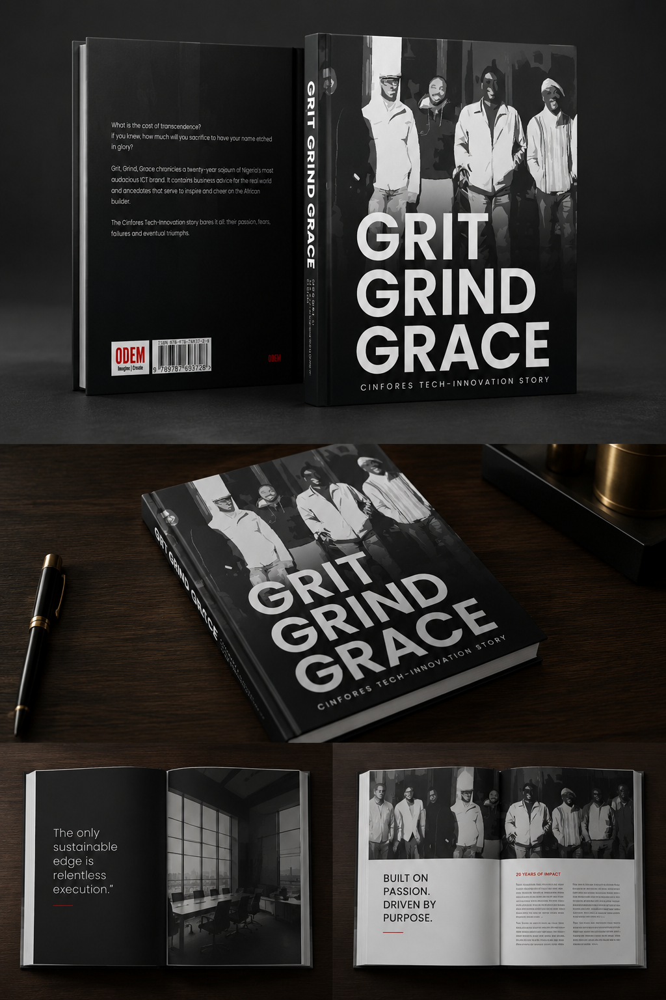

Editorial Depth
Structured interviews, careful research and narrative development shaped for executive audiences.
The Corporate Legacy Company
Helping organizations preserve their histories, institutional memory, leadership journeys and legacy for future generations.
We work with boards, founders, executives and institutions to transform years of leadership, decisions, turning points and cultural memory into refined legacy publications and archival projects.
Structured interviews, careful research and narrative development shaped for executive audiences.
Documents, photographs and institutional milestones curated with museum-like restraint.
What We Do
Each engagement is designed with discretion, documentary rigor and the tactile quality of a permanent archive.
Book-length histories that preserve the decisions, people and milestones behind enduring organizations.
Refined leadership narratives that capture vision, sacrifice, judgment and institutional influence.
Research-led histories for companies, universities, public bodies and family enterprises.
Commemorative books and reports that turn landmark years into memorable cultural artifacts.
Discreet interviews that preserve leadership insight, context and first-person institutional memory.
End-to-end documentation programs for archives, milestones, people, photographs and records.
Turning raw records, manuscripts and memories into a coherent story architecture.
Journey of Preservation
We define the institutional scope, stakeholders, archival sources and intended legacy artifact.
We conduct structured conversations with founders, boards, leaders and institutional witnesses.
Documents, images, timelines and milestone evidence are reviewed and shaped into narrative architecture.
Research becomes a polished manuscript with the rhythm and authority of a premium corporate memoir.
The final artifact is produced with elegant design, lasting materiality and executive presentation value.

Case Study
We were commissioned by the eight founders and shareholders of Cinfores Limited to document the company's 20 year journey in a commemorative corporate memoir.
Through structured interviews, collaborative editorial work, and narrative development, we produced a 200 page legacy publication capturing the company's founding vision, growth, and institutional identity.
Who We Are
“ We believe institutions are remembered not only by what they build, but by how carefully their stories are preserved.
The Corporate Legacy Company helps leaders preserve histories, institutional memory and leadership journeys through research, editorial development, archival organization and premium publication design.
Values
Executive histories require trust, privacy and careful stewardship.
Legacy work begins with rigorous listening, research and verification.
Every page, image and sentence must feel worthy of permanence.
The work is created for successors, boards, families and future historians.
Begin the Archive
For boards, founders and leaders ready to preserve the story behind their organization.
Begin A Legacy Engagement